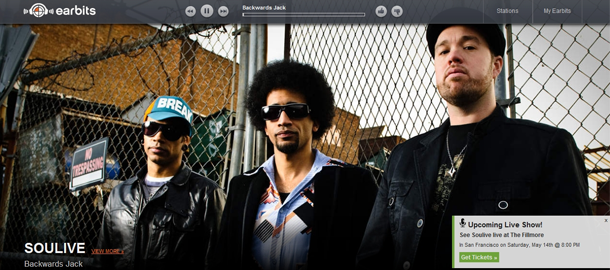
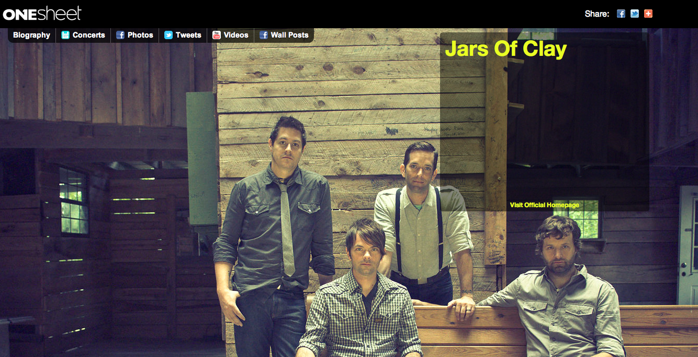

小样儿
～ 记一个移动产品的胎死腹中 (powered by rst2S5)
<免责/>
山寨的，非业界公认的，个人体验为基础!

参考所有同好行为总结而得
- 一切资料来自网络互动挖掘
- 一切想法来自日常学习工作
- 一切体悟来自各种沟通交流
- 一切知识来自社区分享印证
- 一切经验来自个人失败体验
起因
教师节,相关,比较无趣...
会议中
手机中..
有什么软件是常用的?...
常用?
我的手机...
主要功能...
电话
我的手机...
主要功能...
短信
我的手机...
主要功能...
拍照
我的手机...
常用软件...
微博
我的手机...
常用软件...
静读天下
我的手机...
常用软件...
音乐
我的手机...
常用软件...
豆瓣FM
命令行中的音乐播放器

音乐态度
完整的音乐作品是专辑！...
专辑
随时可以听到自己想听的音乐!
- 音乐算钢性需求
- 随时可听已经作到
- 想听到熟悉的对味音乐
- 想听到合口味的新音乐
想听
音乐放送是1.0时代的体验
- 单曲点/随放
- 听/不听的选择
- 无法进一步挖掘/交流
电台
那么什么样的音乐软件是想要的?
痒点..
机会
音乐频道混过...
有糟可吐哪!..
SINA
Earbits
- 取代Pandora的网络电台(广告)
- 营销渠道管理...

OneSheet
- 乐团的about.me
- 乐队的Alibaba...

Share My Playlists:发现对味的音乐
李志
免费下载，自由定价
- 免费下载，自由定价！ lizhizhuangbi.com
移动产品
...
小样儿
小样儿:理解
- 音乐人作音乐不完全求财
- 音乐感动应该感动的人!
- 可以被音乐感动的人明白感恩
- 愿意直接向作者支付!
诚乐
小样儿:乐团
- 能缩短创作者、消费者之间的距离，
- 打破唱片公司的垄断，让音乐更容易流行
直销
小样儿:听众
- 能更容易地听到自己喜欢的音乐，
- 让好的音乐更容易流行
传销
小样儿:支付
- 向乐团捐助
- 朋友推荐(产生二次捐助时,有返点;-)
- 乐迷的山寨专辑推荐/交换中心
微冲动
小样儿:动力
- 豆瓣样儿
- 100个乐团,1000张原创专辑
- 周新增3个乐团,大城市一次现场
- 每日微支付500元
文艺范儿
小样儿!
继续规划ing..
($.$)
音乐人
iOS/Android 连续释放!
- 免费下载，自由定价！ lizhizhuangbi.com
总之:任何好想法
期望记住的~单位时间能记住的只有7+-2 个
- 1个想法
- 至少100个人也在想
- 至少10个人已在开发
- 1个产品可能已发布
- Doing now! don't thinking!
纯HTML 幻灯撰写框架!...

- S5== a S imple S tandards-Based S lide S how S ystem
- 仅仅依靠 CSS+JS 的HTML格式幻灯演示框架

- 虽然有很多其它替代方案，至今用得最爽的还是 S5
- 最好也是最不好的，就是S5 需要专用的http 空间发布，无法直接分享到 slidshare.com 之类SNS空间中